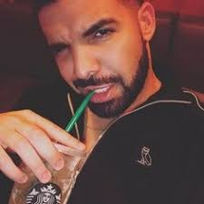

Drake isn’t just the king of sad bops—he’s also got a freaky side that catches you off guard like when he starts throwing heart signs and awkward dance moves at the same time. Whether he's making memes cry with "Marvin's Room" or pulling random accents out of nowhere, Drake’s freakiness is a blend of pure chaos and emotional breakdowns set to a smooth beat.
Drake’s journey into freaky territory is like watching a TikTok sound evolve into a meme—unexpected, kinda cringe, but you can’t look away. It all started with “Hotline Bling,” where Drake’s dance moves looked like he was fighting off invisible bees in a neon-lit uncle sweater. Gen Z quickly realized this dude is like the king of awkward coolness—half rap icon, half overly emotional meme generator. But then things took a weirder turn when he started picking up random accents like they were new skins in Fortnite. One minute he’s from Toronto, the next he’s Jamaican, then suddenly he’s British and saying stuff like “ting” and “man dem” like he’s starring in a budget London gangster flick. But what really secured Drake’s freaky crown were the scandals. There’s that whole drama about him texting Millie Bobby Brown, giving off weird big brother vibes like he’s trying too hard to be “relatable.” Then there’s his endless beef with other rappers—where the diss tracks are more like subtext-heavy diary entries than actual roasts. The internet couldn’t get enough of Drake getting all in his feelings, crying over a girl, then flexing on a yacht five minutes later. And don’t even get me started on the time he was caught on video rubbing a teen girl’s shoulders mid-concert, only to awkwardly backtrack when he realized she was underage—definitely not the vibe he was going for. At this point, Drake has become the human embodiment of Gen Z’s emotional rollercoaster—a mix of thirst traps, ghosting, and pretending to have it all together. Whether he’s turning his mansion into a mood-lit sadness palace or posting cryptic captions about “trust issues,” Drake’s freaky aura is now a permanent part of the culture. He’s like that one friend who’s always a little too dramatic, but you keep him around because you know he’ll end up being meme material by the end of the night.